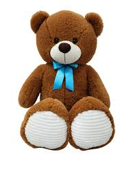
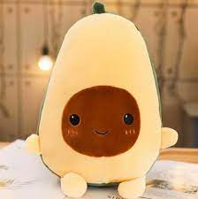
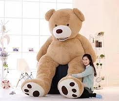
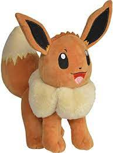
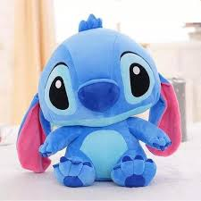

Los Beneficos de los Peluches
Los beneficios de los peluches son
suaves
por su material super esponjoso con 100% de algodon
scuish
su material esta echo con un poco de plasticina no toxica
anti acaros
los materiales que trae estan echos en un laboratorio
Los mas llamativos
tiernos, coloridos y de moda
Tiernos
por su forma y sus ojos son tiernos vienen de korea del sur y se hicieron famosos luego que los koreanos los publicaron en redes sociales
Coloridos
sus colores fuertes y brillantes hace a que los niños quieron muchos de ellos ya que juega un poco con su psiciologia
De moda
por que la palabra de moda pues estos son los peluches que tiene los famosos en sus hogares y esto hace a que los fandoms los quieran comprar
